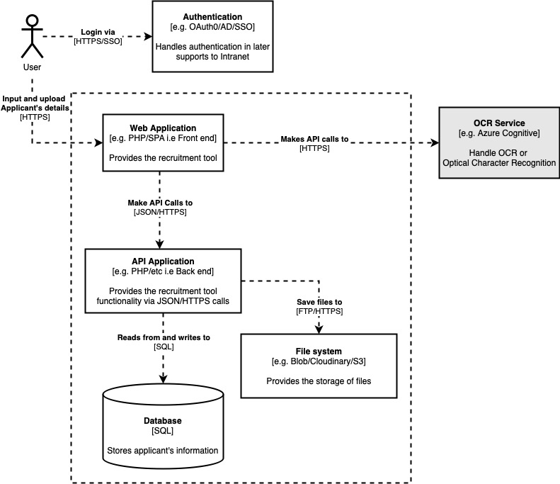
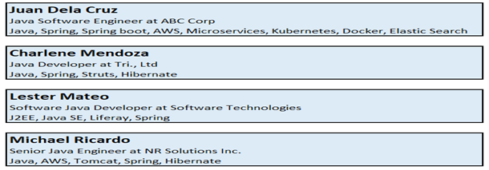

Design Document¶
DesignDocument
Abstract:¶
The Recruitment Tool will serve as a Database of the Recruitment Team for a long-term use. This is to manage the current and previous pool of candidates for different roles. The purposes of this tool are Storing Data/details of the applicants, editing, and updating candidates’ profile, retrieving of profiles, and validating applicants’ history.
Recruitment Interview:¶
Applicants will be interviewed by Recuiters, and in the future, by clients. Their interview statuses will be saved in the Database associated with this tool.
Interview Sheet:¶
This will contain notes which Recruiters have noted as the Candidate’s interviews are in progress.
Architecture Diagram:¶
Wireframes:¶
Wireframe information will be determined soon
User Interface:¶

Users (Recruiters) must be able to manually input the details of the candidates or upload candidates’ profile to this tool once they have done the Initial Recruitment Interview.
Users (Recruiters) must be able to search candidates profile using any applicable keywords (Ex. Java, Spring, Manila, 3years). All candidates with the searched keywords must appear on the result list.
Users (Recruiters) must be able to edit candidates’ profile and to input status updates then history of changes or updates must be seen on the history with date.
Users (Recruiters) must be able to retrieve and download candidates’ profile with history of application and status.
There will be an Interview sheet for entering candidates’ details and there will be an upload button together with the Interview Sheet.
Any keywords and multiple keywords must be applicable to the Search Box, and it must show all the profiles containing the searched keywords.
The searched profiles must be presented in box with 3 lines (Name, Last position & Company, and Top skills).